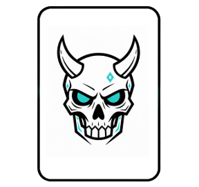
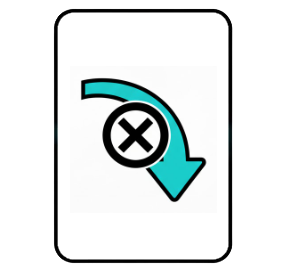
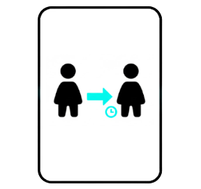
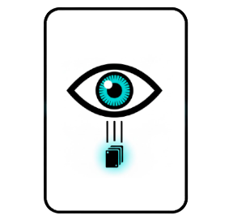
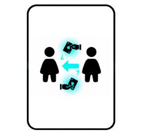
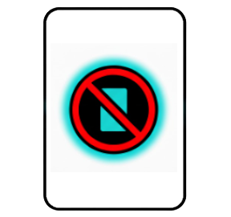
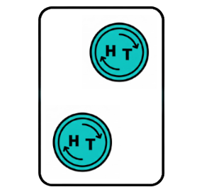
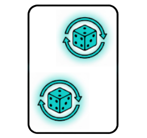
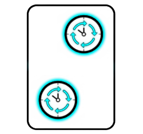

Une las cartas restantes con las cartas de Muerte retiradas anteriormente.
Baraja todas esas cartas juntas y colócalas en la zona de cartas disponibles.
Comienza la partida.
Estado inicial de los jugadores:
Cada jugador empieza con:
2 vidas
La habilidad especial "Trueque", usable una vez por turno
Orden de turnos:
El jugador que inicia se decide como quieran.
Los turnos avanzan en sentido horario.
El sentido puede cambiar por efectos de cartas.
Desarrollo de un turno:
Durante su turno, un jugador puede:
Jugar todas las cartas que quiera, en el orden que desee.
Usar la habilidad Trueque (máximo una vez).
Para finalizar el turno, debe robar una carta, salvo que una carta indique lo contrario.
Habilidad especial "Trueque":
Elige a otro jugador para realizar un intercambio de cartas.
Cada jugador implicado elige 1 de sus cartas y se intercambian dicha carta.
Solo puede usarse una vez por turno.
Puede ser negada con una carta NO.
Condición de victoria:
Cuando un jugador pierde todas sus vidas, muere y queda eliminado.
El último jugador con vida gana la partida.
Efecto de las cartas especiales:
Muerte
Al robarla, pierdes 1 vida.
La carta se revela inmediatamente a los demás.
No puede guardarse, intercambiarse ni negarse.
Tras resolverse, vuelve al mazo y se barajan de nuevo las cartas disponibles.

Pasar
Finaliza tu turno sin robar carta.
Se descarta tras su uso.

Sustituto
Elige a un jugador para darle tu turno.
Tu turno termina sin robar carta y todo lo que haga el jugador elegido es responsabilidad suya.
Tras ese turno, el orden continúa desde tu posición original.
Se descarta tras su uso.

Vidente
Mira las 3 primeras cartas del mazo.
Solo miras, no alteras su orden.
Se descarta tras su uso.

Manipulación
Elige a 2 jugadores, cada uno te enseña 1 carta de su mano.
Miras ambas cartas y eliges una para quedártela.
La otra carta vuelve a su dueño.
Se descarta tras su uso.

NO
Niega el efecto de la última carta, combo o Trueque.
Las cartas negadas no aplican su efecto, pero se descartan.
No puede negar una carta de Muerte.
Se descarta tras su uso.

Cartas normales:
Moneda
No tiene efecto individual.
Solo se utilizan para realizar combos.

Dado
No tiene efecto individual.
Solo se utilizan para realizar combos.

Reloj
No tiene efecto individual.
Solo se utilizan para realizar combos.

Combos de cartas
2 cartas iguales:
Roba 1 carta al azar de otro jugador.
Descarta las cartas usadas.
3 cartas normales iguales:
Elige un jugador y pídele una carta específica.
Si la tiene, te la da. Si no, no ocurre nada.
Descarta las cartas usadas.
Efectos adicionales:
Moneda: Lanza una moneda. Si sale cara, puedes pedir otra carta más a cualquier jugador.
Dado: Lanza un dado de 6. Si es par roba una carta de la zona de descartes. Si es impar descarta una carta al azar de un jugador. Si predices el número, el efecto se duplica.
Reloj: Invierte el sentido de los turnos. Puedes elegir si robas carta o no para finalizar tu turno.